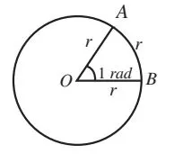
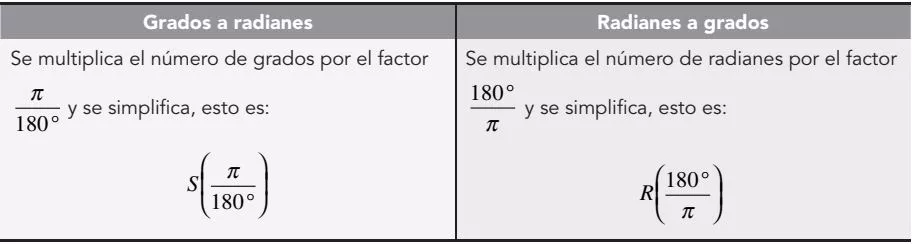

Medidas de ángulosLa magnitud de un ángulo no depende de la longitud de sus lados, sino de la abertura o separación que hay entre ellos; es decir, la medida de un ángulo se obtiene comparando la amplitud del ángulo con la amplitud de otro considerado como unidad patrón. Para medir un ángulo se conocen tres sistemas de unidades angulares.
A) Sistema sexagesimal Este sistema de medir ángulos es el que se emplea normalmente: la circunferencia se divide en 360 partes llamadas grados, el grado se divide en 60 partes llamadas minutos y el minuto se divide en 60 partes que reciben el nombre de segundos.
SimbologíaLa simbología para cada una de estas unidades es:
Grado (°)
Minuto (')
Segundo (”)
Equivalencias 1 circunferencia completa = 360°
1° = 60’ = 3,600”
1’ = 60”
Ejemplos
a) 45°
b) 21° 36’
c) 135° 28’ 32”
Para casos que requieren mayor exactitud se utilizan los décimos y centésimos de segundo.
d) 135° 28’ 32.8”
e) 135° 28’ 32.65”
Conversión de Grados, Minutos y Segundos a: GradosLos minutos se dividen entre 60 y los segundos entre 3,600.
Ejemplo
Convierte 19° 47’ 23” a grados.
Solución
\(\displaystyle 19\unicode{xb0} 47\text{'}23\text{''}=19\unicode{xb0} +\left(\frac{47}{60}\right)+\left(\frac{23}{3600}\right) \)
\(\displaystyle 19\unicode{xb0} 47\text{'}23\text{''}=19\unicode{xb0} +0.7833\unicode{xb0} +0.0063\unicode{xb0} \)
\(\displaystyle 19\unicode{xb0} 47\text{'}23\text{''}=19.7897\unicode{xb0} \)
Por tanto, 19° 47’ 23” equivalen a 19.7897°.
Conversión de Grados, Minutos y Segundos a: MinutosLos grados se multiplican por 60 y los segundos se dividen entre 60.
Ejemplo
Convierte 32° 12’ 15” a minutos.
Solución
\(\displaystyle 32\unicode{xb0} 12\text{'}15\text{''}=\left(32\right)\left(60\right)+12\text{'}+\frac{15}{60} \)
\(\displaystyle 32\unicode{xb0} 12\text{'}15\text{''}=\mathrm{1,920}\text{'}+12\text{'}+0.25\text{'} \)
\(\displaystyle 32\unicode{xb0} 12\text{'}15\text{''}=1,932.25\text{'} \)
Por consiguiente 32° 12’ 15” equivalen a 1,932.25’.
Conversión de Grados, Minutos y Segundos a: SegundosLos grados se multiplican por 3,600 y los minutos se multiplican por 60.
Ejemplo
Convierte 32° 12’ 15” a segundos.
Solución
\(\displaystyle 32\unicode{xb0} 12\text{'}15\text{''}=\left(32\right)\left(\mathrm{3,600}\right)+\left(12\right)\left(60\right)+15\text{''} \)
\(\displaystyle 32\unicode{xb0} 12\text{'}15\text{''}=\mathrm{115,200\text{''}}+720\text{''}+15\text{''}\)
\(\displaystyle 32\unicode{xb0} 12\text{'}15\text{''}=115,935\text{''} \)
Por consiguiente 32° 12’ 15” equivalen a 115,935”.
Conversión de grados fraccionarios a: Grados, Minutos y Segundos
Ejemplo
Convierte 45.5638° a grados, minutos y segundos.
Solución
La parte decimal de 45.5638° se multiplica por 60 para convertir a minutos:
\(45.5638° = 45° + (0.5638)(60) = 45° 33.828\text{'}\)
La parte decimal de los minutos se multiplica por 60 para obtener los segundos:
\(45° 33.828\text{'} = 45° 33\text{'} + (0.828)(60) = 45° 33\text{'} 49.68\text{''}\)
B) Sistema centesimal Para este sistema se considera a la circunferencia dividida en 400 partes iguales, denominadas grados centesimales. Cada grado centesimal se divide en 100 minutos centesimales, cada minuto centesimal se divide en 100 segundos centesimales
SimbologíaLa simbología para cada una de estas unidades es:
Grado centesimal (g)
Minuto centesimal (m)
Segundo centesimal (s)
Equivalencias 1 circunferencia completa = 400 g = 40,000 s = 4,000,000 s
1 g = 100 m = 10,000 s
1 m = 100 s
C) Sistema cíclico o circularEste sistema utiliza como unidad fundamental al radián. El radián (rad) es el ángulo central subtendido por un arco igual a la longitud del radio del círculo. Se llama valor natural o valor circular de un ángulo.

La longitud de la circunferencia es igual a \(2\pi\); por lo tanto, para:
1 circunferencia completa = 360° = 2\(\pi\) radianes = 6.2832 radianes.
De la relación \(\displaystyle radián\,=\frac {360}{2\pi} \) se tiene que:
1 radián = 57.295777°
1 radián = 57°17’44”
\(\pi\) rad = 180°
\(2\pi\) rad = 360°
Conversión de grados a radianes y de radianes a gradosSea S un ángulo en sistema sexagesimal (grados) y R el mismo ángulo en el sistema cíclico (radianes), entonces para convertir

Ejemplo 1. Convierte 150° a radianes.
Solución
Se multiplica 150° por el factor \(\displaystyle \frac {\pi}{180°} \)
\(\displaystyle 150\unicode{xb0} =150\unicode{xb0} \left(\frac{\pi }{180\unicode{xb0} }\right)=\frac{5}{6}\pi \)
Por consiguiente, 150° es equivalente a \(\displaystyle \frac{5}{6}\pi\,radian \)
Ejemplo 2. Convierte a grados \(\displaystyle \frac{7}{4}\pi \, rad \)
Solución
Se multiplica por el factor \(\displaystyle \frac {180°}{\pi} \) y se simplifica al máximo, obteniendo:
\(\displaystyle \frac{7}{4}\pi =\frac{7}{4}\pi \left(\frac{180\unicode{xb0} }{\pi }\right)=\frac{\left(7\right)\left(180\unicode{xb0} \right)\pi }{4\pi }=315\unicode{xb0} \)
Finalmente, \(\displaystyle \frac{7}{4}\pi \, rad \) equivalen a 315°.